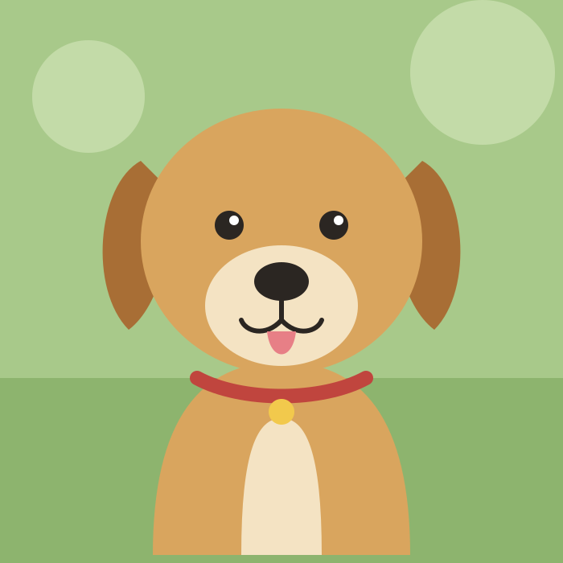

Slow, soft and never startling. Nothing shakes, bounces or flashes. Every move has a still version for reduced motion: it switches with prefers-reduced-motion, using the same timings without the movement.

| Moment | Full motion | Timing | Reduced motion |
|---|---|---|---|
| {{r.a}} | {{r.b}} | {{r.c}} | {{r.d}} |